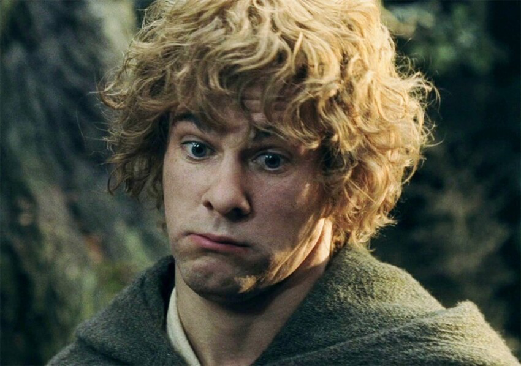

Ме́риадок (Ме́рри) Бре́ндибак (англ. Meriadoc "Merry" Brandybuck) по прозвищу Великоле́пный (англ. Magnificent) — хоббит из Шира, друг, соратник и родственник Фродо Бэггинса и один из девяти членов Братства Кольца, впоследствии — 20-й староста Бакленда.
Единственный ребёнок Сарадока Брендибака и Эсмеральды Тук, родившийся в 2982 Т. Э. Его мать приходилась младшей сестрой тану Шира Паладину II, чей сын Перегрин, таким образом, являлся двоюродным братом Мериадока, и вместе они были неразлучными друзьями. Мерри увлекался лодками и пони, а также испытывал большой интерес к истории и картографии не только Шира, но и всего остального Средиземья.
Мериадок Брендибак, 3019 год Т.Э.
Особенности
Мерри считался наиболее проницательным и сообразительным из хоббитов: например, даже до того, как Бильбо Бэггинс покинул Шир, он знал об Одном Кольце и его могуществе. Он охранял Бэг Энд после вечеринки Бильбо, защищая Фродо от разнообразных и часто нежелательных посетителей. Он также играл важную роль в «Тайной организации», в которую, кроме него, входили Сэм, Пиппин, Фредегар Бoлджер (более известный как «Толстячок», из-за его полноты) и которая помогала Фродо. Поэтому даже до того, как Миссия по уничтожению Кольца началась, Мерри был хорошо подготовлен и организован; он собрал их принадлежности и привёл пони. Предложенный им путь напрямик через Старый лес не сослужил им хорошую службу, хотя они и были спасены Томом Бомбадилом и избежали преследования со стороны Чёрных Всадников. В Могильнике он нашёл свой меч, работы нуменорцев.
В отличии от Пиппина и Гэндальфа, которые отправились в Гондор, он присягнул на верность Теодену и стал его оруженосцем. Без разрешения своего сеньора он отправился на битву на Пеленнорских полях благодаря заботе юного Дернхельма. Когда на всадников Рохана напал Кольценосец и Теоден был ранен, Мерри и Дернхельм встретились лицом к лицу с Королём-чародеем из Ангмара. В этом момент спутник Мерри признался, что на самом деле является Эовин, Белой Госпожой Рохана, племянницей короля. Сражаясь с крылатой тварью и Чёрным Всадником, Эовин получила очень нужную помощь от Мерри: его меч, созданный именно для этой цели, был одним из немногих видов оружия, способных нанести кольцепризраку губительный урон, рассеяв чары, хотя это и нанесло значительный вред самому хоббиту. Несмотря на то, что это общая победа воительницы и полурослика, Мерри не смог бы атаковать улайри без помощи Эовин, а она не смогла бы умертвить Короля-Чародея, ведь не обладала зачарованным клинком. Мерри слышал последние слова Теодена, но не был замечен почётным отрядом Всадников Рохана. Пиппин обнаружил его бродящим по городу. Он был исцелён благодаря Арагорну и полностью выздоровел.
За свою храбрость в битве Мерри был возведён в рыцари королём Эомером. Во время освобождения Шира он сыграл важную роль в Битве у Приречья, использовав рог Рохана, который ему подарила Эовин.
Цитаты
Мерри и Пипин в разрушенном Изенгарде